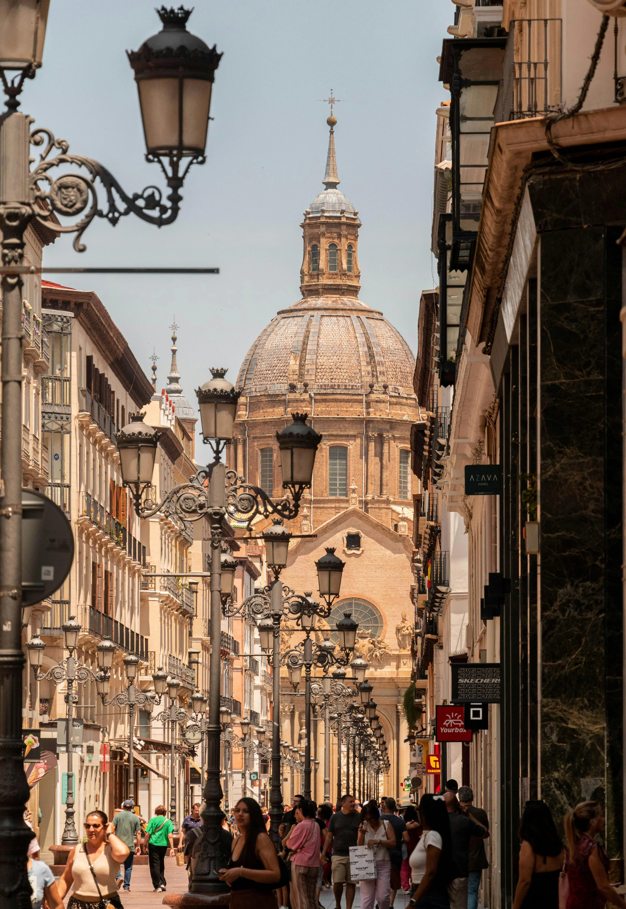

Idiomas
Idiomas
Intercambio de idiomas
Los clásicos tandems en pubs del casco histórico. Una hora en español, una hora en inglés (o francés, o italiano). Sin académias, sin presión.
Ver eventosSalamanca · Estudiantes · Erasmus
Eventos pensados para romper el hielo. Intercambios de idiomas, deportes en el río, rutas por la sierra y talleres grupales. Sin forzar nada.
Explorar actividades
«La mejor forma de conocer Salamanca es conocer a las personas que la hacen.»
Conecta Salamanca nació de una pregunta sencilla: ¿cómo conoces gente cuando llegas a una ciudad nueva? No en el pasillo de la facultad, no en redes sociales — sino de verdad, en una actividad que compartes con alguien.
Cuatro formas de conectar con gente en Salamanca
Idiomas
Los clásicos tandems en pubs del casco histórico. Una hora en español, una hora en inglés (o francés, o italiano). Sin académias, sin presión.
Ver eventos Deporte
Deporte
Voleibol playa, frisbee, pádel y más. Las orillas del Tormes son el punto de encuentro deportivo de los estudiantes de Salamanca.
Ver eventos Rutas
Rutas
Escapadas de fin de semana a la Peña de Francia, Las Batuecas y otros rincones de la provincia. El mejor sitio para hablar es una montaña.
Ver eventos Talleres
Talleres
Cerámica, fotografía analógica, cocina internacional, ilustración. Aprende algo nuevo mientras conoces a gente con los mismos intereses.
Ver eventosSalamanca recibe cada año miles de estudiantes Erasmus y universitarios de toda España. La mayoría llega sin conocer a nadie. Conecta Salamanca existe para que ese primer mes no sea el más solitario.
Todas las actividades que encontrarás aquí tienen una cosa en común: están diseñadas para que hablar con un desconocido sea lo más natural del mundo.
Unirme a la comunidadExplora las actividades o escríbenos para proponer un evento.